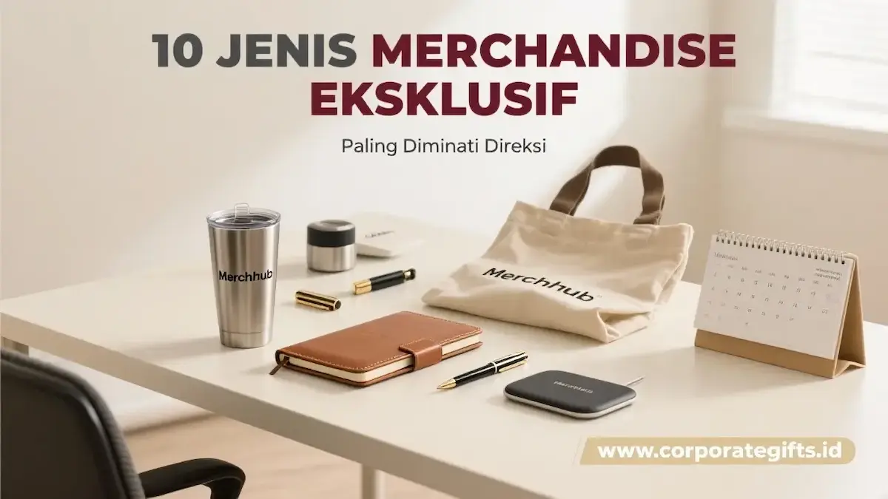

Corporate Gifts ID - Memberikan merchandise eksklusif untuk direksi bukan sekadar tradisi seremonial pemberian cinderamata, melainkan perpanjangan tangan dari diplomasi korporat yang mencerminkan nilai luhur, pengakuan atas kepemimpinan visioner, serta penghargaan tertinggi terhadap integritas pimpinan puncak. Dalam lingkup tata kelola perusahaan modern, hadiah bagi jajaran direksi dan komisaris menuntut standar kurasi yang sangat selektif: produk wajib memadukan kemurnian material premium, nilai fungsional nyata bagi aktivitas manajerial, serta sentuhan personalisasi yang halus tanpa terkesan berlebihan.
Poin Kunci Kurasi Merchandise Khusus Direksi:
- Standar Material Otentik: Mengutamakan bahan asli seperti kulit sapi nabati (genuine leather), kristal optik K9 bebas gelembung, serta logam stainless steel bermutu tinggi.
- Filosofi Understated Luxury: Logo perusahaan diaplikasikan dengan teknik elegan dan tidak mencolok (subtle branding), seperti deboss tanpa foil atau grafir laser mikro.
- Relevansi Terhadap Gaya Hidup Eksekutif: Memilih perlengkapan yang mendukung mobilitas bisnis, penandatanganan kesepakatan strategis, dan kenyamanan ruang kerja.
- Kemasan Hardbox Berlapis Beludru: Presentasi luar sama krusialnya dengan isi cinderamata untuk menciptakan kesan pertama yang tak terlupakan saat prosesi penyerahan.
Filosofi dan Nilai Strategis Hadiah untuk Dewan Direksi
Direksi memegang tanggung jawab strategis tertinggi atas kelangsungan roda bisnis perusahaan. Setiap hadiah korporat yang diserahkan dalam momentum rapat umum pemegang saham (RUPS), perayaan ulang tahun perusahaan (company anniversary), maupun serah terima jabatan (sertijab) harus merefleksikan kehormatan institusi.
Cinderamata yang dipilih secara tepat menjadi wujud nyata dari kultur apresiasi yang sehat, memupuk ikatan emosional antar-pimpinan, serta menjadi simbol legasi kepemimpinan yang berkesan.
10 Rekomendasi Merchandise Eksklusif Paling Diminati Direksi
Berikut ulasan komprehensif mengenai sepuluh jenis cinderamata paling prestisius yang paling sering dipilih korporasi terkemuka untuk jajaran pimpinan:
1. Jam Tangan Premium - Simbol Ketepatan dan Kepemimpinan
Jam tangan eksklusif senantiasa bertengger di jajaran hadiah paling berharga. Bagi seorang direktur, waktu adalah aset paling berharga dalam pengambilan keputusan krusial. Model arloji mekanik klasik bermerek seperti Seiko Presage, Tissot, atau jam tangan beraksen kayu eboni langka dengan ukiran inisial nama di bagian belakang pelat jam (caseback) memberikan kehangatan personal yang mendalam.
2. Pena Eksklusif Berukir Nama - Otoritas dalam Setiap Tanda Tangan
Pena bukan sekadar alat tulis, melainkan instrumen otoritas yang mengesahkan berbagai perjanjian kerja sama bernilai triliunan rupiah. Pena premium dari jenama legendaris seperti Parker Premier, Lamy Studio, hingga pulpen Montblanc berukir grafir laser halus menghadirkan kebanggaan tersendiri saat dikeluarkan dari saku jas pimpinan.
3. Notebook Kulit Asli - Rekan Rapat Strategis Berkelas
Buku catatan bersampul kulit sapi asli (genuine Italian leather) dengan jahitan tangan yang rapi dan kertas bebas asam (acid-free paper) menjadi media pencatat gagasan penting yang sangat fungsional. Dilengkapi fitur selipan kartu nama serta pen loop rapi, buku agenda ini memberikan kepuasan taktil yang tak tertandingi gawai digital.
4. Executive Gift Set Terpadu - Kemewahan Praktis Serbaguna
Paket bundel kurasi eksklusif yang memadukan tumbler stainless steel tahan panas dingin 24 jam, power bank metalik tipis, dan pena rollerball berbalut kotak magnetik mewah berpita satin. Sangat praktis untuk seremoni penghargaan tahunan (Leadership Excellence Award).
5. Power Bank Metal & Smart Wireless Charger
Direksi yang sering melakukan perjalanan dinas membutuhkan daya cadangan yang andal dan aman. Power bank berbodi aluminium anodized dengan kapasitas tinggi serta dukungan pengisian cepat nirkabel (Qi fast wireless charging) memadukan efisiensi mobilitas modern dengan estetika minimalis mutakhir.
6. Hampers Mewah Kurasi Artisan Lokal
Hampers untuk direksi kini bergeser dari bingkisan makanan massal menuju kurasi artisan bernilai tinggi. Koleksi biji kopi arabika single origin pemenang lelang, cokelat artisan single estate, teh putih organik (silver needle), serta sehelai selendang batik tulis sutra menghadirkan sentuhan keramahan budaya Indonesia yang agung.
7. Tas Briefcase & Executive Leather Tote
Tas kerja berbahan kulit gandum penuh (full-grain leather) dengan kompartemen laptop berbusa tebal dan ritsleting logam kuningan tahan lama. Tas ini menemani aktivitas harian pimpinan menuju ruang rapat dewan komisaris dengan ketahanan pakai hingga belasan tahun.
8. Cinderamata Seni & Patung Logam Miniatur
Karya seni miniatur pahatan tembaga atau perak yang melambangkan kemakmuran, keberanian, atau simbol industri perusahaan (seperti burung garuda, kapal layar, atau tugu korporat). Karya seni ini menghiasi meja pimpinan sebagai representasi filosofis yang kaya makna.
9. Corporate Crystal Award & Trophy Kristal Optik
Plakat penghargaan dari bahan kristal optik K9 murni dengan teknik ukir laser internal tiga dimensi (3D subsurface laser engraving). Potongan prisma facet yang membiaskan cahaya secara cemerlang menjadikannya simbol pengakuan dedikasi yang tak lekang oleh waktu.
10. Eco-Friendly Luxury Lifestyle Set
Merchandise berwawasan lingkungan kini menjadi simbol kematangan korporasi modern. Produk seperti tumbler kopi dari komposit bambu alami dengan lapisan dalam baja medis SUS316, payung kayu serat alami, dan buku catatan serat terbarukan mencerminkan komitmen pimpinan terhadap agenda keberlanjutan global.
Tabel Klasifikasi Merchandise Berdasarkan Profil Pimpinan
Panduan segmentasi produk berikut membantu panitia pengadaan memilih cinderamata yang paling selaras dengan karakter dewan direksi:
| Kategori Cinderamata | Karakter & Profil Direksi | Rekomendasi Produk Utama | Nilai Simbolis Utama |
|---|---|---|---|
| The Classic Authority | Pimpinan senior, mengutamakan tradisi, elegan & formal | Pena logam Parker/Montblanc, jam tangan mekanik klasik, plakat kristal optik | Wibawa kepemimpinan, integritas, dan kehormatan jabatan |
| The Modern Agile Leader | Direktur muda/fintech, mobilitas tinggi, menyukai efisiensi kerja | Wireless charging pad, powerbank aluminium tipis, leather laptop sleeve | Kecepatan adaptasi, produktivitas, dan visi masa depan |
| The Heritage Patron | Apresiasi tinggi terhadap seni budaya, cita rasa tinggi | Hampers kopi artisan nusantara, batik tulis sutra, miniatur seni logam | Kehangatan relasi, kearifan lokal, dan penghargaan karya seni |
| The Sustainable Pioneer | Berorientasi pada tata kelola hijau, pendukung aktif prinsip ESG | Eco-tumbler SUS316 bambu, agenda daur ulang mewah, reusable lifestyle kit | Tanggung jawab sosial, etika keberlanjutan, dan masa depan bumi |

Detail pengerjaan presisi dan pemilihan material kelas atas menjadi pembeda nyata merchandise level direksi.
Etika Branding Minimalis dan Keanggunan Kemasan Bespoke
Kunci utama kesuksesan merchandise untuk pimpinan puncak berada pada kematangan penerapan branding. Hindari mencetak logo korporasi dalam ukuran raksasa atau warna mencolok yang menutupi keindahan produk utama.
Pilihlah teknik subtle branding:
- Blind Debossing: Teknik cetak tenggelam tanpa tinta emas pada sampul kulit buku agenda atau tas kerja.
- Laser Micro-Engraving: Ukiran nama pimpinan dan logo perusahaan dengan garis sangat halus di bagian samping klip pena atau pelat boks.
- Custom Hardbox Packaging: Kotak kaku tebal (greyboard 30) berlapis kertas seni impor, busa cetak presisi beludru, serta kartu ucapan resmi bertanda tangan dewan komisaris.
Pertanyaan Seputar Merchandise Eksklusif Direksi (FAQ)
Kesimpulan dan Panduan Konsultasi Bersama Kurator Ahli
Merchandise eksklusif untuk direksi merepresentasikan standar kepemimpinan dan reputasi korporasi Anda di kancah bisnis tertinggi. Memilih cinderamata yang mengedepankan kualitas otentik dan personalisasi berkelas akan melahirkan kebanggaan tulus serta mengabadikan jejak pengabdian para pimpinan secara terhormat.
Serahkan kebutuhan cinderamata direksi dan pimpinan instansi Anda kepada CorporateGifts.ID. Kami menyediakan kurasi produk VIP bergaransi mutu, sampel fisik dummy sebelum produksi, serta opsi kemasan custom mewah yang siap memeriahkan seremoni formal perusahaan Anda.

Ditulis oleh: Arinda Zakia
Senior Corporate Gifting SpecialistSpesialis kurasi hadiah korporat dan cinderamata VIP di CorporateGifts.ID. Berpengalaman lebih dari 7 tahun dalam menyusun paket suvenir dewan direksi BUMN, plakat kristal optik eksekutif, serta pengemasan bingkisan formal pimpinan institusi nasional.
Lihat Profil Lengkap & Panduan Lainnya